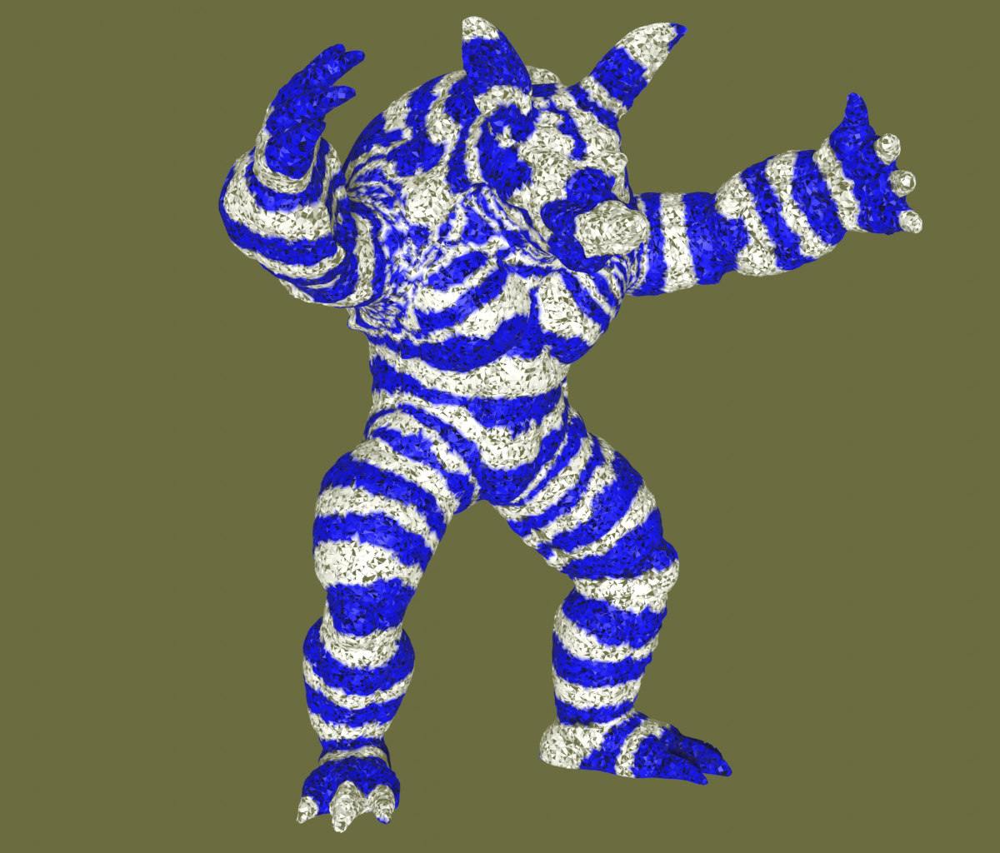

|

|
|
Abstract:
We present a novel method for faster physics simulations of elastic solids. Our key idea is to re-order the unknown variables according to the Fiedler vector (i.e., the second smallest eigenvector) of the combinatorial Laplacian. It is well-known in the geometry processing community that the Fiedler vector brings together vertices that are geometrically nearby, causing fewer cache misses when computing differential operators. However, to the best of our knowledge, this idea has not been exploited to accelerate simulations of elastic solids which require an expensive linear (or non-linear) system solve at every time step. The cost of computing the Fiedler vector is negligible, thanks to an algebraic Multigrid-preconditioned Conjugate Gradients (AMGPCG) solver. We observe that our AMGPCG solver requires approximately 1 second for computing the Fiedler vector for a mesh with approximately 50K vertices or 100K tetrahedra. Our method provides a speed-up between 10% - 30% at every time step, which can lead to considerable savings, noting that even modest simulations of elastic solids require at least 240 time steps. Our method is easy to implement and can be used as a plugin for speeding up existing physics simulators for elastic solids, as we demonstrate through our experiments using the Vega library and the ADMM solver, which use different algorithms for elasticity.
|

![[PHOTO]](../../images/knight_small.png)